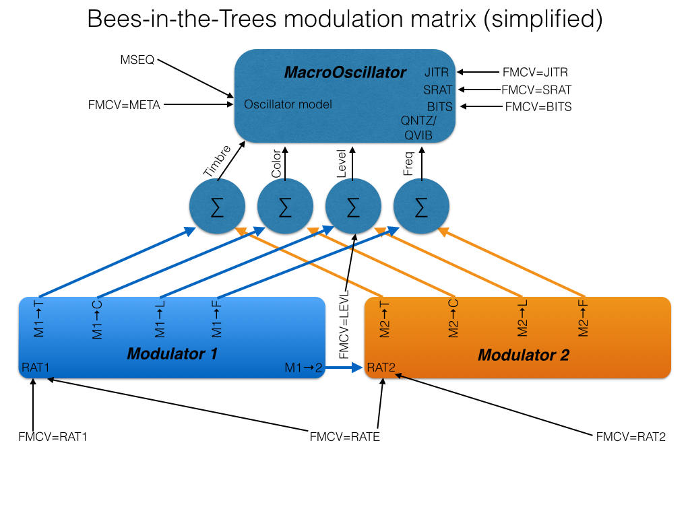

This repository is based on a copy of the Mutable Instruments GitHub repository at https://github.com/pichenettes/eurorack
So far, the only modified code is the Bees-in-the-Trees enhancements to the Braids module, as described and documented below. However, ideas for future hacks of Mutable Instruments module firmware are being collected on the Mutated Mutables wiki. If you have a GitHub account, then you can contribute directly to that, otherwise send your ideas to tim.churches@gmail.com, or post them on the MI Forum.
Acknowledgements
First and foremost, huge thanks are due to Olivier Gillet of Mutable Instruments for creating Braids and his other wonderful Eurorack synth modules - in terms of depth and breadth of creativity, elegance and excellence of implementation and execution, they are head-and-shoulders above other Eurorack synth modules. But equally huge thanks are due to Olivier for having the vision, courage and faith to release the designs and source code for his modules under open-source licenses. Without that, the modifications which are documented here would not have been possible.
{kind=link}
Many thanks also to Sneak-Thief in Berlin, first of all for providing the impetus for me to start hacking the Braids code, and then for providing lots of really useful feedback on the initial design of the Bees-in-the-Trees modifications, and for actively testing early iterations of the code and discovering several bugs (and documenting how to reproduce them!). Many thanks are also due to a team of volunteer testers who have tried out each successive pre-release version of Bees-in-the-Trees, found and reported bugs, and provided helpful suggestions and encouragement. In particular I would like to thank weliveincities (aka Chris Penalosa), Bmhot (aka Steph), stevencrichton (aka Steven Crichton), stevenb (aka Steven Barsky), AcousmatiK (aka Brice Moise), simonebosco, pauk (aka Pau Cabruja), sixty_n (another Tim) and RyuX (aka Patrick P.) on the Mutable Instruments forum.
Bees-in-the-Trees
Bees-in-the-Trees is a modification to the "official" firmware as supplied by Mutable Instruments on the Braids modules it manufactures and sells.
The goals of these modifications are to:
- expand the internal, self-modulation facilities in Braids;
- expose a wider range of internal parameters to external voltage control;
- add a few additional features that may make Braids more useful or easier to integrate into a modular patch in some circumstances.
These enhancements are necessarily constrained by a number of factors:
- the hardware design of all existing Braids modules is obviously fixed, and thus the firmware must work with the hardware facilities available. For example, there are four CV inputs available in Braids. Firmware changes cannot create a fifth one.
- the computational power of the STM32F1 processor which powers Braids is finite, and thus there is a limit to the amount and complexity of additional code and computations that can be added to the firmware while still allowing the processor to keep the audio buffer filled, in real-time.
- the storage space for compiled program code in flash memory is limited to exactly 108 pages of 1024 bytes each - that is, 110,592 bytes. Thus there is a hard limit to the size and complexity of the firmware for Braids. In order to remain under this firmware size limit, some features have had to be removed from Braids to make space for the enhancements described below. See below for details of what has been removed.
Bees-in-the-Trees is based on the official Braids v1.7 source code, and has had the sync buffer and DAC timing bug fixes which were made to the v1.7 code in late January 2015 ported to it: thus the core oscillator code is identical to the current Braids v1.7 code. However, many changes to modulation options and other aspects have been made.
Why is it called Bees-in-the-Trees? Because Olivier Gillet named his alternative firmware for the Mutable Instruments Tides module "Sheep". That established la règle du jeu which demanded to be followed.
Intended audience for Bees-in-the-Trees
Bees-in-the-Trees is intended for expert users of the Braids module. It, and this documentation, presumes a good understanding of the way in which Braids running the official, factory firmware works. If you have only recently obtained your Braids module, then it is strongly recommended that you spend some time (days, weeks, months) thoroughly familiarising yourself with it before trying Bees-in-the-Trees. Braids is a complex, deep module - it isn't called a MacroOscillator for nothing! Bees-in-the-Trees only makes it more complex. Also, this documentation is intended to be a meta-manual, to be read in conjunction with or as an adjunct to the official Braids manual.
But I hate menu-diving
If you hate "menu-diving" or demand that all your synthesiser modules strictly adhere to the "one knob per parameter" paradigm, then Bees-in-the-Trees is probably not for you, because it adds a lot of additional menu settings to Braids, and requires lots and lots of menu-diving and encoder twiddling and clicking to make use of it. There are plans to add presets to Version 4 of Bees-in-the-Trees, but even then, the encoder knob on your Braids will see a lot of use if you install Bees-in-the-Trees. It makes the BMW iDrive interface seem very ergonomic indeed. You have been warned!
Note: mechanical encoders like the one used in Braids have a finite operational lifespan, and it is possible to wear them out. Typical manufacturers' figures are a lifespan of a minimum of 30,000 rotational cycles (complete revolutions, not rotational clicks), and 20,000 presses (see for example the Bourns PEC-12 encoder datasheet). However, those are minimum lifespans, and most encoders will last much longer than that. The encoder is also fairly easy to replace - any competent electronics technician should be able to do it, and the encoder part itself costs just a few dollars. Nonetheless, use of Bees-in-the-Trees does entail a great deal of encoder twiddling and clicking, and thus it will wear out your encoder more quickly. If that bothers you, then you should not install Bees-in-the-Trees.
TL;DR
For those short of time or attention span, here is a summary table of the many settings which Bees-in-the-Trees makes available. If you want more detail about what each one does and how best to use it, then read on after the table.
The order of the settings in the menu was informed by seeking input from testers. Unfortunately, Arrow's Theorem applies, and thus the ordering is necessarily sub-optimal, but better orderings are impossible.
The following documentation relates to Bees-in-the-Trees version 3.2
| Setting | Purpose | Values |
|---|---|---|
| SAVE | Saves settings to flash storage, switches to oscillator selection mode | Oscillator models |
| LEVL | Initial level (gain, volume). | 0 to 250 |
| FMCV | Select purpose/destination of FM CV input | FREQ, META, RATE, RAT1, RAT2, LEVL, HARM, JITR, BITS, SRAT, SMUT, DIRT, FLTH |
| MOD1 | Internal modulator 1 mode | OFF, LFO, ENV-, ENV+ |
| RAT1 | Internal modulator 1 rate (LFO frequency or envelope duration) | 0 to 127 |
| ⇑SH1 | Shape of rising arm of LFO or attack part of envelope | EXPO, LINR, WIGL, SINE, SQRE, BOWF, RNDE, RNDL, RNDS, RNDM |
| ⇓SH1 | Shape of falling arm of LFO or decay part of envelope | EXPO, LINR, WIGL, SINE, SQRE, BOWF, RNDE, RNDL, RNDS, RNDM |
| ⇑⇓1 | Ratio of rising/attack LFO/envelope duration to falling/decay duration, as a percentage | 2, 10, 20, 30, 40, 50, 60, 70, 80, 90, 100, 11, 125, 143, 166, 200, 250, 33, 500, 1k, 5k |
| M1SY | Modulator 1 sync/phase reset | 0 to 127 |
| M1→T | Modulator 1 timbre modulation depth | 0 to 250 |
| M1→C | Modulator 1 colour modulation depth | 0 to 250 |
| M1→L | Modulator 1 level (gain, volume) modulation depth | 0 to 250 |
| M1→F | Modulator 1 frequency (oscillator pitch) modulation depth | 0 to 127 |
| M1→2 | Modulator 1 depth of modulation of Modulator 2 rate (frequency/duration) | 0 to 127 |
| MOD2 | Internal modulator 2 mode | OFF, LFO, ENV-, ENV+ |
| RAT2 | Internal modulator 2 rate (LFO frequency or envelope duration) | 0 to 127 |
| ⇑SH2 | Shape of rising arm of LFO or attack part of envelope | EXPO, LINR, WIGL, SINE, SQRE, BOWF, RNDE, RNDL, RNDS, RNDM |
| ⇓SH2 | Shape of falling arm of LFO or decay part of envelope | EXPO, LINR, WIGL, SINE, SQRE, BOWF, RNDE, RNDL, RNDS, RNDM |
| ⇑⇓2 | Ratio of rising/attack LFO/envelope duration to falling/decay duration, as a percentage | 2, 10, 20, 30, 40, 50, 60, 70, 80, 90, 100, 11, 125, 143, 166, 200, 250, 33, 500, 1k, 5k |
| M2SY | Modulator 2 sync/phase reset | 0 to 127 |
| M2→T | Modulator 2 timbre modulation depth | 0 to 250 |
| M2→C | Modulator 2 colour modulation depth | 0 to 250 |
| M2→L | Modulator 2 level (gain, volume) modulation depth | 0 to 250 |
| M2→F | Modulator 2 frequency (oscillator pitch) modulation depth | 0 to 127 |
| M1T2 | Modulator 1 amplitude modulation of Modulator 2 timbre modulation | OFF, ON |
| M1F2 | Modulator 1 amplitude modulation of Modulator 2 oscillator pitch modulation | OFF, ON |
| MSEQ | Meta-sequencer enable/sequence length | OFF, 2, 3, 4, 5, 6, 7, 8 |
| SDIR | Sequence direction | LOOP, SWNG, RNDM |
| WAV1 | Meta-sequence step 1 oscillator model | Oscillator models |
| NOT1 | Meta-sequence step 1 note (pitch) offset | 0 to 127, in equally tempered semitone increments |
| RPT1 | Meta-sequence step 1 repeat count | 1 to 127 |
| ... | WAVn, RPTn where n=2 to 7 | ... |
| WAV8 | Meta-sequence step 8 oscillator model | Oscillator models |
| NOT8 | Meta-sequence step 8 note (pitch) offset | 0 to 127, in equally tempered semitone increments |
| RPT8 | Meta-sequence step 8 repeat count | 1 to 127 |
| OSYN | Oscillator phase sync/reset | OFF, ON |
| RINV | Internal modulator rate inversion | OFF, ON |
| BRIG | Display brightness | LOW, MED, HIGH |
| CAL. | Oscillator pitch tracking calibration | |
| CV tester | Control voltage display dials | |
| RANG | Oscillator frequency range | EXT, FREE, XTND, 440, LFO |
| OCTV | Oscillator octave offset | -2, -1, 0, 1, 2 |
| FTUN | Oscillator fine tune | 0 to 127, 63=zero pitch offset |
| FS+H | Frequency (oscillator pitch) sample and hold | OFF, ON |
| QNTZ | Frequency (oscillator pitch) quantisation | OFF, QTR, SEMI |
| QVIB | Quantise internal vibrato | OFF, ON |
| TDLY | Trigger delay time | NONE, 125u, 250u, 500u, 1ms, 2ms, 4ms |
| TSRC | Trigger source | EXT, AUTO |
| BITS | Bit-crushing | 2BIT, 3BIT, 4BIT, 6BIT, 8BIT, 12B, 16B |
| SRAT | Output signal sample rate | 4K, 8K, 16K, 24K, 32K, 48K, 96K |
| JITR | Oscillator drift/jitter | 0 to 127 |
| RST | Settings reset | NO, DFLT, NO, FULL |
| v3.2 | Bees-in-the-Trees firmware version |
Bees-in-the-Trees: what's changed in Version 3.2, compared to Version 3.0?
- a new setting, HARM (harmonic series quantisation) has been added to the
FMCVsetting. - note (pitch) values,
NOT1toNOT1, have been added to the meta-sequencer, so that a melody can be programmed and stored. The notes are set as semitone positive offsets. - the CLKN oscillator model has been restored, but the TWNQ model has been removed.
- the
M1C2setting has been removed. - a
FTUN(oscillator fine-tune) setting has been added, immediately afterOCTV.
Bees-in-the-Trees: the gory details of all the changes made to the official Braids firmware
- The
WAVEmenu setting has been renamedSAVE. With the Braids firmware, clicking onWAVEtakes you back to oscillator model selection mode, with a side-effect of saving all your settings. In Bees-in-the-Trees, clicking (or long-clicking, see below) onSAVEsaves all your settings, with a side-effect of taking you back to oscillator model selection mode. In other words, the behaviour is the same, but the name was changed to emphasise the save aspect, because in Bees-in-the-Trees, there is also a long-click shortcut to toggle between menu mode and oscillator model selection mode (see below). - Instead of a single internal envelope, there are now two internal modulators,
MOD1andMOD2. TheMOD1andMOD2menu settings allow each internal modulator to be turned off (OFF), put in in LFO mode (LFO), or in one of two envelope modes (ENV- and ENV+). ENV- and ENV+ are negative and positive envelopes respectively - ENV+ is like a traditional attack-decay envelope, ENV- is the inverse. - Each internal modulator has a rate setting,
RAT1andRAT2respectively, with ranges from 0 to 127. When in envelope mode, lower rate values produce shorter envelope segment (attack and decay) durations, and higher rate values produce longer envelope segment durations i.e. slower envelopes. When in LFO mode, lower rate values produce slower LFO speeds (lower LFO frequency), and higher rate values produce faster speeds (higher frequencies), if theRINV(rate inversion) setting is ON (which is the default). However, if you turnRINVoff, then higherRAT1orRAT2settings will produce slower LFO speeds. This can be useful if you are controlling one envelope and one LFO with an external voltage - see below. - Each internal modulator has four depth controls:
M1→T,M1→C,M1→LandM1→F; andM2→T,M2→C,M2→LandM2→F. These set the depth of modulation for each of timbre, color, level (amplitude), and frequency (pitch), respectively, between values of 0 to 250, except for frequency modulation depth, which is 0 to 127. Each modulation destination receives a weighted sum of the instantaneous modulator values. For example, ifM1→T=30 and the instantaneous value of modulator 1 is, say, 100, andM2→T=60 and the instantaneous value of modulator 2 is 200, then the timbre parameter will receive a value of (30 * 100) + (60 * 200) = 15000. Obviously the values for modulator 1 and modulator 2 change each time the envelopes/LFOs are rendered, which is about 4000 times per second. - The timbre and color potentiometers and/or the timbre and colour CV inputs act as offsets - the weighted sum of the modulator values is added to these offsets. The
LEVLsetting controls the initial level (gain) offset. It defaults to 250 (the maximum). Unlike timbre and color, which are added to whatever offset is set by timbre and color potentiometers and/or the timbre and color CV inputs, the the modulation values for level are subtracted from this initial offset value (LEVL). Thus, when a modulator is in ENV+ mode, it will have no effect of the output level if theLEVLis already set to 250, its maximum. In order to hear the effect of a positive-going envelope on level, you must reduceLEVLto a lower value - all the way down to zero if you wish to hear nothing between envelope firings. - The
M1→2settings controls the degree of frequency modulation of modulator 2 by modulator 1. Yes, LFO 1 can frequency modulate LFO 2! M1T2andM1F2are ON/OFF switches which determine whether the depth of modulation of timbre and pitch by modulator 2 is itself modulated by the current value of modulator 1. That is, when enabled, these settings mean that modulator 1 determines depth of modulator 2 modulation of timbre and oscillator frequency, respectively. Thus, if you set modulator 1 to be a slow envelope with a gentle attack, and setM1F2on, withM2→Fset to some positive amount, and modulator 2 in LFO mode, then the effect will be vibrato that slowly fades in after a trigger is received. There are many other interesting variations possible.- The ratio between the attack and decay segments of each envelope, or the rising part of the waveform and the falling part in LFO mode, can be set by menu choices labelled
⇑⇓1and⇑⇓2. These provide value choices ranging between 2 and 5000 (these are ratios expressed as a percentage, thus 100 is a ratio of 1:1). These values refer to the ratio between the duration of the attack segment of the attack-decay (AD) envelope, or the rising segment of the LFO waveform, and the duration of the decay segment or falling segment, respectively. Thus a value of 10 means that the attack part of the envelope is a tenth of the duration of the decay part. Likewise, at a setting of 10 the LFO waveform is asymmetrical, with the rising portion only one-tenth as long as the falling portion. Obviously a ratio setting of 100 produces a symmetrical waveform, and an envelope in which attack and decay are of equal duration. At a setting of 5000, the decay/falling arm of the envelope is 50 times as long as the attack/rising arm.- Note: the LFO frequency or the total envelope duration will change as the
⇑⇓1and⇑⇓2settings are adjusted. This is a known deficiency which may be able to be addressed in future versions of Bees-in-the-Trees. For now, you may need to re-adjustRAT1orRAT2after changing⇑⇓1and⇑⇓2.
- Note: the LFO frequency or the total envelope duration will change as the
- Each of the two internal modulators has its own pair of shape settings (
⇑SH1and⇓SH1, and⇑SH2and⇓SH2). These set the shape of the curve used for the attack/rising and decay/falling parts of the envelope/LFO waveform respectively, for each of modulator 1 and modulator 2. Thus, an envelope can have different shapes for the attack and decay portions, and an LFO waveform can not only be asymmetrical, but have a different curvature or shape on the raising and falling arms of its cycle. The following curve shapes are available:- EXPO is an exponential curve, as used in the envelopes in the official Braids firmware.
- LINR is a linear curve i.e. a straight line (and thus in LFO mode produces sawtooth, triangle or ramp waveforms, depending on the
⇑⇓1or⇑⇓2ratio settings). - WIGL is a wiggly line.
- SINE is a sine wave (well, almost a sine wave - it re-uses an existing look-up table in the Braids code which is close to a sine wave).
- SQRE is a square-ish curve - a bandwidth-limited square wave with quite rounded shoulders, in fact.
- BOWF is a logarithmic curve with a flat top - it is actually an inverted version of the bowing envelope for the BOWD oscillator mode in Braids, hence the name.
- RNDE is the same as EXPO except that the target level for the top of the envelope or LFO waveform varies randomly on each envelope or LFO cycle.
- RANDL and RNDS are the same as RNDE, except using linear and square-ish curves as described above.
- RNDM sets a fixed random level which is flat for the entire envelope segment or LFO half-wave - thus it acts like a traditional clocked sample-and-hold sampling a random voltage. Please be aware that this mode can result in audible clicks when used for some modulation destinations, because the level shifts instantaneously - there is no rate-limiting or easing between successive levels.
- The
FMCVsetting replaces what was theMETAmenu setting in the official Braids firmware.FMCVdetermines to what use the FM control voltage input is put. The available choices are:- FREQ, which means the FM input does, um, FM (frequency modulation).
- META, which is the same as
METAmode on in the official firmware - voltage on the FM input scans through the oscillator modes. - RATE, in which voltage on the FM input sets the duration of the envelope segments, or the frequency of the LFOs - thus providing voltage-controlled envelopes and/or LFOs, with the FM voltage affecting the duration/speed of both internal modulators.
- Tip: if you have
MOD1set as an envelope, andMOD2set as an LFO, or vice versa, and you are usingFMCV=RATE, then it may be useful to setRINVto OFF, so that the CV operates in the same direction on bothMOD1andMOD2.
- Tip: if you have
- RAT1 is the same except the FM voltage only affects modulator 1;
- RAT2 is also the same but the FM voltage only affects modulator 2. Note that for the rate settings, the voltage on the FM input is added to the RAT1 and RAT2 values for each each modulator, thus a base LFO speed or envelope duration can be set using RAT1 and RAT2, and that can then be modified by voltage on the FM input.
- LEVL provides voltage control over the level (amplitude, gain). You may need to reduce the initial gain (
GAIN) down to zero to hear the full effect - approximately 5V at the FM CV input should produce full gain. This setting provides Braids with a built-in virtual VCA, in the same way that the Level input in Tides/Sheep acts as a virtual VCA. - HARM allows the FM CV input to offset the current note as a quantised harmonic series. The harmonic series is the base frequency of the current note multiplied by 2, 3, 4 and so on. In Bees-in-the-Trees, approximately +5V into the FM CV input (with the attenuverter fully clockwise) gives the 15th harmonic overtone (that is, the base frequency times 15) – that’s as far as it goes. It is bipolar, so negative voltages on the FM CV input divide the current note frequency by 2, 3, 4 and so on, down to 15. You can use the FM attenuvertor to change positive voltages into negative voltages, of course. Try it! It sounds really nice when fed with an external LFO or a complex slowly fluctuating voltage source. The harmonic series (also called harmonic overtones and undertones) doesn’t depend on a particular musical key, so you can still play a normal melody and “bend” the notes up or down in the harmonic series. Of course, it is better if you use just intonation (or Pythagorean tuning) to play those notes, and if you have more than one Braids, or use multi-tracking to record one Braids several times, you will get “perfect” chords. Yarns can do just intonation or Pythagorean scales for you.
- JITR provides voltage control over VCO jitter (drift), with a base level set by the
JITRmenu setting. - BITS provides voltage control over bit crush depth, with a base level set by the
BITSmenu setting. Increasing voltage reduces the number of bits in the output signal. - SRAT provides voltage control over sample rate (decimation), with a base level set by the
SRATmenu setting. Increasing voltage reduces the sample rate (that is, increases the decimation) of the output signal. - SMUT provides simultaneous voltage control over both bit crushing (
BITS) and VCO jitter (JITR). - DIRT provides simultaneous voltage control over both sample rate reduction (
SRAT) and VCO jitter (JITR). - FLTH provides simultaneous voltage control over both sample rate reduction (
SRAT) and bit crushing (BITS). - The final over-the-top setting provides simultaneous voltage control over sample rate reduction (
SRAT), bit crushing (BITS) and VCO jitter (JITR).
- LFO range has been enabled in the range (
RANG) menu. This LFO range was always present in the Braids source code, but its selection was disabled. The LFO range seems to go down to about 1Hz or so - thus it doesn't make Braids into a proper LFO, but it is low enough for many LFO modulation duties. Braids certainly produces many more interesting LFO waveforms than your average voltage-controlled LFO, And of course the two internal LFOs can still modulate Braids when its set to LFO - thus you can use Braids as two voltage-controlled LFOs (MOD1andMOD2) inside your voltage-controlled LFO (the main Braids VCO when in LFO range)! DRFT(VCO drift) has been renamedJITR(jitter), and is now a settable value, from zero (off) to 127. At a setting of 127, you get noisy sonic destruction, but lower levels of jitter can add some nice dirt to some oscillator models.JITRcan also be put under voltage control via theFMCVsetting. Note thatJITRcauses the oscillator pitch to change (not sure why) to some degree.- The
RATE(sample rate) setting in Braids has been renamedSRATin Bees-in-the-Trees. - The
TSRC,TDLY,OCTV,QNTZ,BITS,BRIG,CAL.and CV testing menu choices are unchanged and function exactly as they do in the official Braids firmware. - However, immediately following
QNTZ(pitch quantisation), there is a new menu selection calledQVIB, which stands for "quantise vibrato". It defaults to OFF - that is, vibrato from the internal modulators (or from the external FM input) is applied after pitch quantisation has been performed, if pitch quantisation is enabled (via theQNTZsetting). However, ifQVIBis set to ON, then quantisation will be performed after pitch modulation from the internal modulators has been added. Thus, a triangle pitch (frequency) modulation, provided by, say,MOD1via theM1→Flevel, will result in rising and falling chromatic arpeggio effects, more or less. It can be quite effective when the RNDM modulator shape is used, for example. - There is a new menu item called
FTUN(oscillator fine-tune). This allows very fine tuning of the oscillator frequency (pitch). Why is this needed, since Braids already has a fine-tune knob, you may ask? The fine-tune knob on Braids acts through the FM CV input. Because Bees-in-the-Trees re-purposes (some would say abuses) the FM CV input for several other purposes, there is no way to fine tune your oscillator using the fine-tune knob when these alternative uses of the FM CV input are enabled. TheFTUNsetting provides a work-around for this. Please note thatFTUNdefaults to 63, because 63 represents zero pitch offset. Values below 63 flatten the pitch, values above 63 sharpen the pitch. Note that it is very fine-grained: each increment is less than one cent. - There is a new menu item called
FS+H, immediately followingOCTV.FS+Hstands for "frequency (i.e. pitch) sample-and-hold". It is disabled (OFF) by default, but when enabled (ON), the pitch as set by the V/octave pitch input is sampled whenever a trigger is received on the trigger input, and then that pitch is held until the next trigger input. Note that the "hold" pitch initialises to 440Hz prior to the first trigger being received after enablingFS+H. IfFS+H=OFF, then pitch sampling is disabled even if triggers are being received, and thus when you then enableFS+H, Braids will return to the last sampled pitch, at least until a new external trigger signal is received.- Note:
FS+Honly works with external triggers, not internally generated triggers, thus if you enableFS+H, first ensure thatTSRC=EXT, not AUTO. Also, although the value ofFS+His stored along with other settings, the sampled frequency is not, and thus does not persist between reboots - it is an ephemeral value.
- Note:
M1SYandM2SY(modulator 1 sync, and modulator 2 sync) determine whether a trigger (either external or auto) will trigger and/or reset the phase of modulator 1 or modulator 2, respectively. They default to 1, which means ON. A setting of 0 (zero) disables modulator triggering and/or phase reset.- Tip: if you are using
MSEQ(see below) andMOD1and/orMOD2in LFO mode to modulate timbre, color or other parameters, then try turningM1SYand/orM2SYoff to decouple the internal modulators from the trigger stream driving the meta-sequencer. But there's more!M1SYandM2SYcan both be set to values greater than one - all the way up to 127, in fact. This is a trigger or clock divider. Thus, ifM1SY=3, then the phase of modulator 1 will only be reset on every third trigger received. This allows further variation in modulation patterns if desired. - Trap: note that if you have
MOD1in one of the envelope modes, andM1SYis set to 0, then the envelope will not trigger, by design! That's whyM1SYandM2SYdefault to 1. But ifM1SYis set to, say, 3, then theMOD1envelope will fire only on every third trigger input. The same applies toMOD2in envelope mode andM2SY. Interesting rhythmic effects can be set up by using different envelope settings forMOD1andMOD2, together with different values forM1SYandM2SY, even with a regular clock input as the trigger source.
- Tip: if you are using
OSYN(oscillator sync) determines whether oscillator phase synchronisation is enabled or not. It defaults to OFF. When enabled, (external or auto) triggers may cause audible clicks in some oscillator modes. Disabling it prevents those clicks, at the expense of not resetting the oscillator phase. However, the official Braids firmware disables oscillator sync whenever the internal envelope was used, in any case, probably for the same reason.- Bees-in-the-Trees adds a simple step meta-sequencer to your Braids. There are eight steps available in the sequence, and the sequence is advanced by triggers received on the trigger input jack. The
MSEQsetting enables the meta-sequencer. The value ofMSEQ, from 2 to 8, also sets the number of steps. TheSDIRsetting determines the direction of the meta-sequence: LOOP means that the sequence increments from 1 to the number of steps as set byMSEQ, and then it loops round to step 1 again; SWNG causes the sequence to swing up then down between step 1 and step indicated byMSEQ; and RNDM chooses an oscillator model randomly from the eight specified for each meta-sequence step. The probability density function is uniform, but a bias towards particular oscillator models can be introduced by specifying that model for more than one of the eight available steps. The settingsWAV1,WAV2...WAV8allow the oscillator model for each step to be chosen. The settingsNOT1,NOT2...NOT8allow the positive pitch offset (musical note) for each step to be specified. Zero (the default) means no offset, 1 means one semitone higher pitch, 2 means two semitones higher, and so on up to 127. These offsets are relative to whatever note or pitch is currently playing - so the sequence can be transposed up and down using a keyboard to controller or an external sequencer etc. The settingsRPT1,RPT2...RPT8determine the number of trigger inputs that each step is repeated (held) for - all these settings default to 1. Thus,RPT4=3 means that the sequence of oscillator models will stay on step 4 for 3 successive input triggers. Using this, a "rhythm" of oscillator models can be set up, even when the triggers come from a regular clock signal. Note that ifMSEQis enabled, thenFMCV=META mode is disabled if it is set. However, otherFMCVmodes still work whenMSEQis enabled.- Trap: if
MSEQwas enabled when you last saved your settings (by clicking or long-clicking onSAVE), then it will still be enabled when you next power up. If there is no trigger input when you power up, the meta-sequence will not be stepping through its stored sequence, and thus it may not be obvious thatMSEQis turned on. Furthermore, oscillator selection will not seem to work. Do not panic! Simply click or long-click on the encoder to get to the settings menu, navigate toMSEQand turn it off, and all will be well again. Remember to save your settings before powering off, by clicking or long-clicking onSAVE! - Peculiarity: if
MSEQis enabled when your Braids boots up, but if there is no trigger being received, then it will initialise on the second step of the meta-sequence - that is, the oscillator model specified byWAV2will be set. That's because Braids generates an internal trigger when it boots, and thus the meta-sequence advances one step, even without an external trigger.
- Trap: if
- There is a new oscillator model, called ZERO, right at the end of the model list, after PRTC. Don't get too excited, because this model fills the audio buffer with zeroes, and thus produces absolute silence. This was added to enable "rests" to be inserted in the
MSEQmeta-sequencer. The downside is that there is an audible click when switching to it, because the signal amplitude immediately goes to zero. I can't think of any easy way to avoid this, however. The same problem occurs, to a lesser degree, and in the factory firmware as well, when switching to some of the other models, for similar reasons. Note that the ZERO model isn't accessible viaFMCV=META mode. - There is now a shortcut between menu mode and oscillator model selection mode. If you are in menu mode, if you do a long-click (hold down the encoder for more than half a second), then you will be taken directly back to oscillator selection mode. In oscillator selection mode, if you do a long-click, you will be dropped back to menu mode on the menu choice you were last on when you used the long-click shortcut. This makes it easy to switch back-and-forward without losing your place in the menu. Note that this long-click shortcut doesn't work when actually editing a setting value (edit mode), only when you in menu mode.
- Note: your settings are saved when you short-click or long-click on the
SAVEmenu item, but they are not saved when you use the long-click shortcut to swap to oscillator model selection mode from any other menu item - as in the standard Braids (in whichSAVEis calledWAVE), only clicking (or long-clicking) onSAVE/WAVEcauses your settings to be saved.
- Note: your settings are saved when you short-click or long-click on the
- As an extra guard against accidental reset of all settings, which in the Braids firmware is done by a long-click when the version string is displayed in menu mode, Bees-in-the-Trees uses a separate menu item:
RST(reset). TheRSTmenu item has four settings: NO, DFLT (defaults), NO, and FULL. IfRST=NO, then a long-click when onRSTwhen in menu mode does nothing. IfRST=DFLT, a long-click onRSTin menu mode resets all the settings back to the defaults (essentially vanilla Braids behaviour, with no internal modulation etc), except for the calibration data, which is preserved. IfRST=FULL, a long-click onRSTin menu mode resets all the settings back to the defaults, including the calibration data. Thus, performing a settings reset is a four-stage process: first navigate to theRSTmenu item, then short-click on it and choose DFLT or FULL, which arms the reset function, and then short-click again to return to theRSTmenu item, and finally long-click onRSTto cause the reset to actually occur. Your Braids will respond with a buzz to confirm the settings reset, and you will be returned to oscillator model selection mode. ThisRST=DFLT procedure should make it much quicker to get back to vanilla Braids operation without losing calibration data, while still preventing accidental settings resets. - Finally, the menu mode is now like an Ouroboros – instead of being a linear list starting with
SAVEand ending with the version string, the menu items are now in a loop, so that if you are at the version string (the end), one more forward increment on the encoder will loop you back toSAVE(the beginning). This should make it quicker to navigate through the now rather large number of menu items. When in oscillator model selection mode, a short-click still takes you back toSAVE, and a long-click takes you to the position you were at in the menu loop when you last used the long-click shortcut to oscillator selection mode.- Tip: because the list of menu items is a loop, it can be tricky to quickly find the SAVE option, because it is not at the beginning of the menu items (there is no beginning, nor end). Here is one work-around: from any menu item (except
CAL.orRST), you can long-click to go directly to oscillator selection mode, then a short-click will take you toSAVE, then another short-click will save your settings and take you back to oscillator selection mode, and another long-click will take you back to where you started in the menu. Thus, from nearly anywhere in the menu, a long-click and then two short-clicks and then a long-click will save your settings and bring you back to where you were. That tends to be much faster than scrolling through the menu items looking forSAVE.
- Tip: because the list of menu items is a loop, it can be tricky to quickly find the SAVE option, because it is not at the beginning of the menu items (there is no beginning, nor end). Here is one work-around: from any menu item (except
The Modulation Graph

Anti-enhancements
These changes, with respect to the official Braids version 1.7 firmware, were required in order to free up space in the firmware storage for the enhancements described above.
- A paschal oophorectomy has been performed: the Easter egg oscillator model has been removed and the ability to trigger Easter egg mode has been disabled. One could say that the code for it has been Pynchoned off...
- The marquee feature has been removed.
- The TWNQ and QPSK oscillator models have been removed.
- VCO tune flattening (
FLAT) and signature waveshapping (SIGN) have been removed.
Installation and De-installation
Obligatory warnings
- As per the license text at the top of every source code file for Bees-in-the-Trees, Bees-in-the-Trees is available for your use only if you accept the following terms:
THE SOFTWARE IS PROVIDED "AS IS", WITHOUT WARRANTY OF ANY KIND, EXPRESS OR IMPLIED, INCLUDING BUT NOT LIMITED TO THE WARRANTIES OF MERCHANTABILITY, FITNESS FOR A PARTICULAR PURPOSE AND NONINFRINGEMENT. IN NO EVENT SHALL THE AUTHORS OR COPYRIGHT HOLDERS BE LIABLE FOR ANY CLAIM, DAMAGES OR OTHER LIABILITY, WHETHER IN AN ACTION OF CONTRACT, TORT OR OTHERWISE, ARISING FROM, OUT OF OR IN CONNECTION WITH THE SOFTWARE OR THE USE OR OTHER DEALINGS IN THE SOFTWARE.
- Installing Bees-in-the-Trees will reset the calibration data in your Braids, so you will need to re-calibrate it, using the (very straightforward) procedure described in the Braids manual. Likewise, re-installing official Braids firmware will also reset the calibration data, so you will need to re-calibrate yet again. However, it only takes a minute or so. But if you are not able to re-calibrate your Braids, then please do not install Bees-in-the-Trees!
- If you want to re-install the official Braids firmware, then you MUST re-install the latest release in the v1.7 factory firmware series, which is here: http://mutable-instruments.net/static/firmware/braids_1.7.wav – or a version of the factory firmware later than v1.7 if that is available. Do not re-install any of the earlier "release candidate" versions of v1.7 factory code, nor version 1.5 or earlier of the factory firmware. The reason for re-installing only v1.7 of the official Braids firmware is that only the very latest version of the official v1.7 Braids code contains a special settings checking routine that ensures that re-installation of the official firmware after installing Bees-in-the-Trees (or other hacked code) will result is sane settings and a fully functional Braids. Of course, if there is a version of the official Braids firmware later than v1.7 available at the time you read this, then you should install that. The main thing to remember is that after installing Bees-in-the-Trees, you may experience problems if you try to re-install any version of the factory Braids firmware earlier than version 1.7. However, if you re-install version 1.7, it should be fine (all testing to date suggests that is the case, at least).
- You need to be aware that if you are installing Bees-in-the-Trees via the audio bootloader facilty then there is a very small chance that something may go wrong, either while installing Bees-in-the-Trees, or while re-installing the factory Braids firmware. Olivier Gillet has designed the audio bootloader to be highly fail-safe, and almost foolproof, but nonetheless, there is a very small risk that you could end up with a non-functioning Braids due to a failed firmware upgrade (that is, your Braids ends up being "bricked"). If that happens, then I (Tim Churches) can offer only advice. I cannot offer an unbricking service, except to Braids users located in Sydney, and only then on a best-effort basis by prior arrangement. Thus, before trying Bees-in-the-Trees, you may wish to enquire whether there are other Braids users in the city or region where you live who are willing to re-install factory firmware for you using the FTDI or JTAG/SWD interfaces on Braids, just in case something does go wrong. I very much doubt that you will have any problems, but it is best to proceed cautiously. Note that installation of Bees-in-the-Trees cannot physically damage your Braids, so the module will always be recoverable if you have access to an FTDI or JTAG/SWD programmer as described here.
- Note also that the fine print in the Braids manual states that Olivier doesn’t offer an unbricking service for Braids that have had alternative firmware installed on them. That said, the likelihood of bricking your Braids when using the audio bootloader is very small – as already noted, it has been designed to be failsafe and nearly idiot-proof.
- See also the warning about encoder wear-and-tear in the "But I hate menu diving" section above.
OK, enough warnings.
If you have access to an FTDI interface or a suitable JTAG/SWD programmer, then you can just clone or download the Bees-in-the-Trees source code (use the HEAD commit from the master branch), compile it and flash it to your Braids. Instructions regarding this are here. See also the note below about encoder direction and firmware image size.
If you are intending to use only the audio bootloader, then you should carefully follow the following steps:
- Use the audio bootloader, as described in the Braids manual, to first load the very latest Braids v1.7 firmware – see the link to it above. Verify that works correctly. The reason for first upgrading to Braids v1.7 (or later) before installing Bees-in-the-Trees is to confirm that audio firmware updates are working correctly in your system. It is much better to confirm that using the official Braids v1.7 firmware than with Bees-in-the-Trees. Common reasons for audio updates not working are insufficient volume level when playing the firmware WAV file into your Braids module, or extraneous sounds, such as email or Facebook post notifications, being generated in your computer while you are playing the firmware WAV file.
- Practice the Braids re-calibration procedure and verify that has worked.
- Proceed to load the latest Bees-in-the-Trees version via the audio bootloader in the same way. Compiled firmware images in WAV format for Bees-in-the-Trees are available at the following locations. Be sure to download the files, using the download icon in the middle of the top of the page - don't listen to the file! And check that the downloaded size is exactly as shown below. You can also check the SHA1 or MD5 hash values if you like, but that is not essential.
- Bees-in-the-Trees version 3.2 firmware update file in WAV format - for Braids manufactured by Mutable Instruments (8,540,972 bytes, SHA-1 5a35fc4c1299a5d72f5bc46cee4ff08be7c8ddae, MD5 cd32d0b0e80bb0872baaa603b97ab919)
- Bees-in-the-Trees version 3.2 firmware update file in WAV format - for DIY Braids with Bourns or similar reversed encoder (8,540,972 bytes, SHA-1 4d4a65f04e98221e598306459ddde8f839aeaf62, MD5 2720cf6aeb8f21c8ecd116be814244e6)
- Re-calibrate your Braids.
- Go crazy with it.
You shouldn’t need to manually reset the stored settings if you follow this procedure – your Braids should do that automatically when it boots up after installing the Bees-in-the-Trees code (and likewise when you re-install the latest v1.7 or later factory firmware).<.p>
However, if your Braids does seem confused, you can trigger a manual settings reset in Braids v1.7 firmware by navigating to the version string right at the end of the menu choices, and doing a long-click on the encoder. Warning: this also resets your calibration data, so you’ll need to re-calibrate yet again.
In Bees-in-the-Trees, the reset procedure is slightly different - please see the full description above. Use the RST=FULL option if you need to reset the settings after a firmware update.
Re-installation of the factory Braids firmware is similar:
- Use the audio bootloader, as described in the Braids manual, to re-load the very latest Braids v1.7 firmware – see the link to it above. Verify that works correctly.
- Re-calibrate it.
Bug reports
If you encounter a bug or anomalous behaviour while using Bees-in-the-Trees, please report it via email to tim.churches@gmail.com However, in order to fix bugs or problems, they must be reproducible, and to that end, it would be helpful if you could report as many as possible of the settings which you were using when you encountered the bug, and provide details of any other external inputs or modulation. Cutting-and-pasting the TL;DR table of settings above into the body of an email message and then annotating or editing that list is a handy way of documenting settings.
TO-DO and Roadmap
- PENDING: Work out why VCO drift (
JITR) causes a pitch change. Due to it being a form of non-linear FM, perhaps? - PENDING: Prevent the LFO frequency or the total envelope duration from changing when the
⇑⇓1and⇑⇓2settings are adjusted. Did I mention that integer arithmetic is a pain in the arse?
Other ideas, which could be implemented in future versions of Bees-in-the-Trees, are captured in the Mutated Mutables wiki.
Encoder direction and firmware image size
Some crazy people (including me!) have built DIY versions of Braids, and have used Bourns encoders in doing so. These operate in the opposite direction to those used by factory-built Braids modules. In order to accomodate this, #define BACKWARDS_ENCODER is set at the top of the encoder.h source code file. If you are compiling the source code yourself to load on a factory-built Braids, then you should ensure that this #define is commented out (place // in front of it on the same line). Failure to do that will mean that the encoder on your Braids will run backwards!
The other consideration if you are compiling Bees-in-the-Trees yourself is the total size of the final compiled and linked firmware image. The size of the waves.bin image, as built by make -f braids/makefile wav, must be under 110,592 bytes. The other way to check is to run make -f braids/makefile size and then cat build/braids/braids.size. Add the first two numbers (the ones under text and data). That will give the total size of the binary image - the number should be exactly the same as the size in bytes of the wave.bin file. That size must be under 110,592, otherwise the saved settings will, after 10 or 11 save cycles, over-write the tail end of executable image and your Braids will probably hang, or at least misbehave badly. My recommendation is to use the J Snyder package for the EABI ARM GCC compiler recommended by Olivier Gillet (which includes v4.7.3 of arm-none-eabi-gcc, that's what I use), but later versions may also work - but you must keep an eye on the size of the compiled and linked binary image! Be aware that Bees-in-the-Trees uses almost all the available flash storage space when compiled - it is a tight fit!
Discussion
All these enhancements seem to work fine, but more extensive testing is always helpful. As mentioned above, Bees-in-the-Trees is intended for advanced users only, and assumes thorough familiarity with the way Braids operates. The modulators can interact with each other, by design, in complex and interesting ways (note that their values are summed for each destination, and the resulting sum is clipped - thus with the right offsets and modulation depths, you can achieve half-wave clipping effects etc). All of these substantially extend the range of sounds that can be coaxed out of a Braids, without using any other modules at all. Add a single external LFO or sequencer modulating the FM input, or a clock or trigger source stepping the MSEQ mode, and all sorts of really amazing things are possible. As such, Bees-in-the-Trees may be particularly useful in small systems where external modulation sources are few, but since it does not remove or subtract any vital or commonly-used existing Braids features or capabilities, it may be useful even in large systems.
Feedback and suggestions are welcome and appreciated - please email tim.churches@gmail.com
Some flight paths of bees in the trees